Radar Cards
Using vaious Python libraries including Pandas, Matplotlib, Plotly, & Pybaseball, functions were written to scrape player attribute data from player databases, create, clean & manipulate data frames to generate season-level overview stats, & develop radar chart plots depicting player performance.

Project Overview
- Skills
- Tools
- Code & More
Skills at a Glance
Functions were coded to allow user input of a selected player. These functions scrape player overview data from, & utilize libraries to perform additional scraping of, the Fangraphs player statistics database. Data is cleaned & reviewed, & additional data is crafted to plot radar charts & player overview stats. These outputs are visually represented on unique trading cards that allow the audience to quickly view a player's offensive abilities in relation to the rest of the league's performace.
Tools at a Glance
Python code is under the hood of this project - pre-built functions in the Pybaseball library are used to access player statistics, Requests & HTML are used to scrape player overview data, Pandas for data frame creation & manipulation, Matplotlib for developing general plots, Pottable & Plotly to enhance plotting, & finally GIMP for visually assembling the cards.
Code Repository & Additonal Cards
To view additional cards in this collection and to read the write-up, keep scrolling below!
To view the full code for this project, please check out the Github repo.
Current Cards in This Set
Introduction
Recently I rekindled my love of baseball. As someone who grew up playing the sport, and whom has a never-ending desire to research and make sense of any and every topic, this project was the perfect culmination of my interests. There are endless possibilities when reviewing and analyzing a player’s stats to determine their capabilities on-field. One example of just how ingrained statistical analysis is within the baseball enthusiast community lies on the trading cards developed for each player. In addition to being beautiful pieces of art bolstering collections of baseball card connoisseurs, they display a plethora of useful statistics that translate a player’s skills to numbers and allow an audience to weigh those values, ultimately determining a player’s overall abilities.
The quantity and diversity of these stats has grown exponentially with the implementation of advanced technology and increased prevalence of information algorithms in society. We now have the ability to automatically review almost every single aspect of every single pitch in every single game. In fact, there is so much data being generated that making sense of it would be nearly impossible without this automation. One single season of pitch-level data collection for the MLB generates a CSV file that is nearly 800,000 rows long and 100 columns wide, enough to crash even the most robust spreadsheet applications without proper filtering via code. Each row lists items ranging from a running count of a player’s plate appearances, the type and location of a pitch displayed as an x-y value within the confines of a strike zone, velocities, trajectories, and locations of a hit ball, and advanced batting average metrics just to name a few. Making sense of this data, developing visual models lending themselves to the ease of that data’s analysis, and determining which metrics are most important when reviewing a player’s performance is the driving force behind this project.
As the curious person I am, with a creative knack, I decided to try my hand at developing my own baseball cards; coding my own functions to pull what I determine to be the most useful overall statistics when determining a player’s abilities and formatting them in a manner that allows a person to easily visualize that data. There were two main items I wanted displayed on this card:
- a statistical overview chart displaying the season, plate appearance outcomes, batting average, and at least one advanced batting analysis metric for a given player.
- a radar chart visually representing a player’s important offensive skills (to be determined after data review) that allow for quick and easy reference at first glance.
From there, additional player overview attributes would be selected for display.
This project encompasses elements of coding, web-scraping, data review, cleaning, manipulation, and analysis, data frame creation, statistical review, and data visualization and presentation. From obtaining the data, selecting and tweaking the important metrics, and presenting this information in a visually appealing manner, this project embodies the life cycle of data in the form of a review tool that is a baseball card.
Data Collection, Manipulation, & Sorting Methods
As noted above, the main source of this data was obtained through the deployment of code, namely, Python. Elements of web-scraping through the implementation of the ‘Requests’ and ‘Urllib’ libraries, automated web-scraping through the calling of built-in functions of the ‘Pybaseball’ library, as well as data frame creation, cleaning, and manipulation by the ‘Pandas’ library were utilized to develop the necessary data to display on and create my cards. This required installation of Pybaseball and importing the necessary tools from each of these libraries. For ease of file storage and access, code was written and executed in Google Colab.
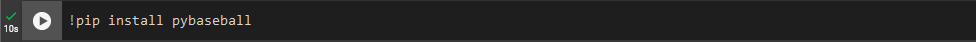 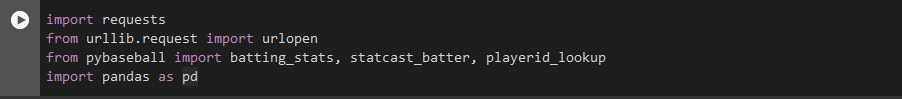One item to note: all of the data scraped and compiled is was pulled from Fangraphs.com, an online resource of Major League Baseball Sabermetric statistics.
I determined that the first item I would develop would be the stat overview on the back of the card. In order to create this, a variable named ‘data’ would be named to store the results of a function, returned as a data frame. The Pybaseball ‘batting_stats’ function used to retrieve season-by-season overview stats for each player in the league for a given range of dates. The ‘batting_stats’ function requires the input of a few arguments to accurately retrieve the data requested. These are a season start year, a season end year, and a lower limit of plate appearances for batters to be considered. Plate appearances can be ignored, but data for players who had fewer than 200 plate appearances would just add more data points to review and clean, and players I was most interested in reviewing stats for had far more plate appearances than 200.
Next, the returned data frame was written to a CSV file. I did this so that I wasn’t constantly calling the ‘batting_stats’ function each time I opened my notebook. I was able to save this CSV file in my Google Drive and access the data by calling the ‘read_csv’ Pandas function. To ensure the data was saved and being read each time I called the ‘data’ variable, ‘data.shape’ was used to verify the size of the CSV file. As seen above the ‘data’ data frame is 4,728 rows in length and 321 columns wide.
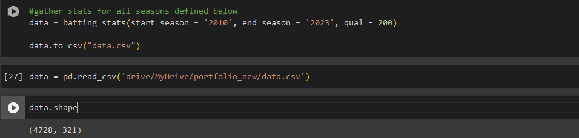To understand what type of data was available to review in the CSV, I used the ‘.head()’ line of code as well as printed the columns of the data frame to a list.
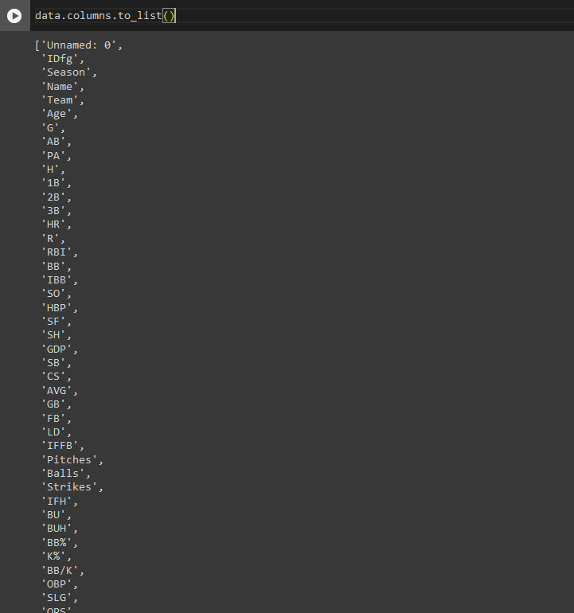As seen above, there are metrics ranging from simple ‘name’ and ‘age’ data to slightly more advanced items such as slugging percentages (SLG) and on-base percentages (OBP). After spending a decently long period of time reviewing each of these stats, and keeping the first of my two project requirements in mind, I decided that I would use the following stats for my player overview chart:
- Season (Season)
- Team name (Team)
- Age (Age)
- Games played (G)
- Number of At Bats (AB)
- Hits (H)
- Singles, Doubles, Triples, Home Runs, and Walks (1B, 2B, 3B, HR, BB, respectively)
- Runs Batted In (RBI)
- Stolen Bases (SB)
- Slugging Percentage and On Base Percentage Plus Slugging Percentage (SLG and OPS, respectively)
- Overall Batting Average (AVG)
These stats give me a complete overview of what year and for which team a player was playing, how old they were, the total number of at bats in how many games they played that season, the specific outcomes of each time a player reached the bases as a runner, and relevant percentages related to batting performance for each season.
Using this same function call, below is the first part of a function I wrote to retrieve a given player’s data, sort and select specific stats to display in an overview, and write this information to a new, smaller, player-specific data frame.
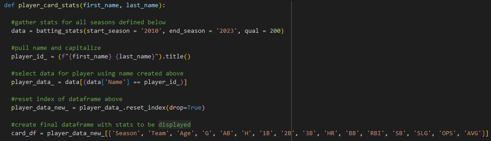Starting at the top row of the function I named ‘player_card_stats’, I set two arguments that would be required to execute the function. These would be a selected player’s first name and last name. Moving to the next line, you can see the ‘batting_stats’ function call outlined above. I chose 2010 as that gives us 13 years of data to work with. In order to pull the information for the specified player in the original function call, a ‘player_id_’ variable would need to be created to filter our data frame with. This was done by simply printing the first and last names entered, and applying ‘.title()’ to capitalize the name. Names in the table are capitalized and matching would be case-sensitive, so this was a mandatory step. Using the capitalized name, I filtered the original data frame by searching the ‘Name’ column of the data and returning all rows where the ‘Name’ value matched the ‘player_id_’ variable creating a new data frame, ‘player_data_’. This data was resorted by ‘Season’. A clean data frame with the player data was created, resetting the data new data frame index to begin at zero for ease of data frame searching and manipulation. From there, the data frame was filtered to only the stats selected to be on the card and assigned to one final, ready-for-use data frame named ‘card_df’.
At this point, I could test my code on a player. Below is the output of Shohei Ohtani’s ‘card_df’ generated using the function above.
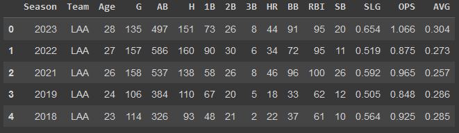From there it was time to focus on retrieving the necessary data to complete the second of my two project requirements: the radar chart. A radar chart was selected for this project as it is a visual representation of a player’s ability levels in relation to the rest of the league data. A more complete filled area within a radar chart, the higher a players abilities, and therefor (theoretically) the better the player. As such, data for each player would need to be reviewed in relation to the rest of the league in each respective chosen attribute.
Following the same general procedures as above, I wrote a function that once again accepted the input of a player name called ‘current_player_radar’. This time when I called the ‘batting_stats’ function, I would only be retrieving three years worth of stats for the entire league. Given that I was interested in the most current stats for a player, this was sufficient to generate weighted and ranked data required to create a radar chart displaying a players stats in relation to the rest of the league.
Similar to the generation of the above ‘card_df’ data, I was interested in determining the most applicable stats in relation to offensive performance. I settled on the following:
- Number of wins that can be expected out of a player above an average stand-in player (WAR)
- Batting Average (AVG)
- The normalized value of a player’s On Base Percentage (OBP+)
- The weight normalized value of a players Runs Created (wRC+)
- How fast a player is (Speed)
- The weighted value of a player’s Runs Above Average (wRAA)
- The value a player adds via their base-running abilities (UBR)
Once this data was selected, all values for the league were weighted and ranked against the rest of the players in the entire league’s numbers in the form of a percentile using ‘.rank()’ with the ‘pct’ value set to ‘True’. These scored values were assigned to new columns in the data frame and would become the columns used to generate the radar chart.
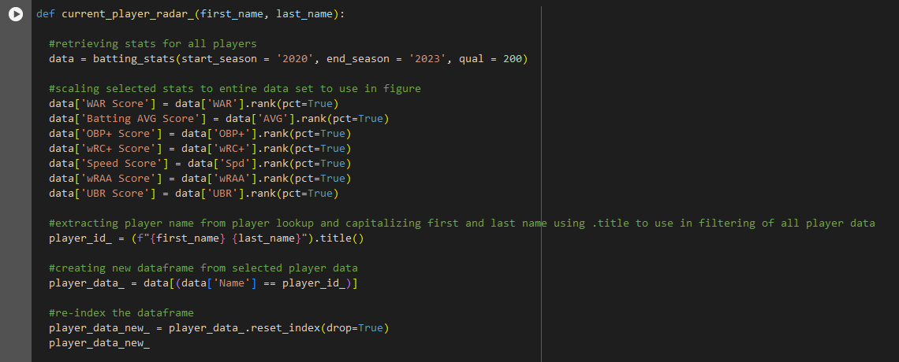Similar to the back-of-card overview chart, data was then filtered by player name input and placed into a new data frame, where the indexing would again be reset to allow for simple data selection.
One final set of information would need to be obtained for the generation of the playing card: player attribute overview. I landed on the following information for my cards:
- Name
- Age
- Dominant batting hand / Dominant throwing hand
- Height / Weight
- Position
To do this, I need to scrape data from a website with player data. Luckily, Fangraphs.com is written in a way that allows someone to easily navigate and locate specific pieces of player information. Each URL for each player is written in such a way that if you replace the first name, last name, and unique Fangraphs ID of each player, you land on the player’s Fangraphs page.
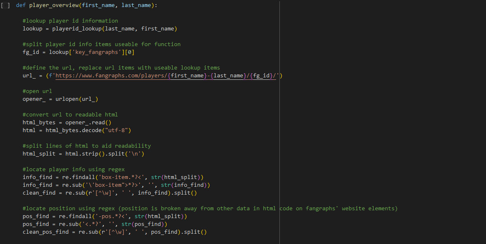Given this information, I could again write a function which accepted a player’s first and last name. From there, the player name could be used in the Pybaseball ‘playerid_lookup’ function. Output of that function can be seen below.
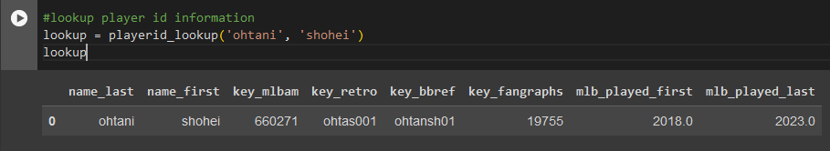As seen in my function code, I defined a variable, ‘fg_id’, to store the ‘key_fangraphs’ info from above by indexing the return results. This allowed me to insert the player first name, last name, and ‘fg_id’ into the Fangraphs URL using an ‘f-string’. Once the URL was defined using my variable inputs, I could open and read the URL’s HTML code using the ‘Requests’ and ‘Urllib’ libraries imported previously. This returns the entire HTML code of a website.
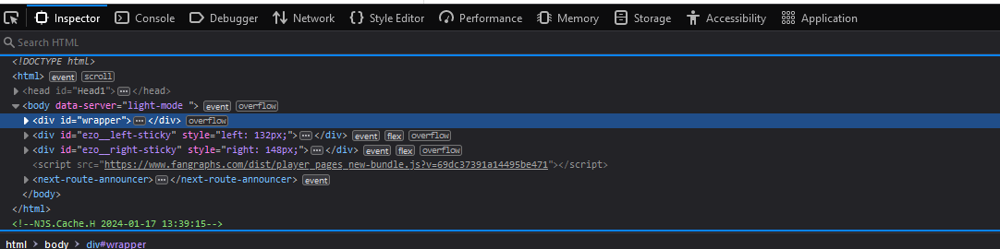From here, I identified pieces of the HTML code that contained the pieces of information I wanted for my cards using their HTML tags. The information I needed was tagged as ‘box-info’ and ‘-pos’. Using Python’s Regex library, I was able to identify the needed information, strip all characters other than the info I was looking for, and place this information into lists I named ‘clean_find’ and ‘clean_pos_find’. I combined these lists to form a data frame that contained all of the chosen attributes for a given player.
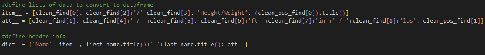Output of this ‘dict_’ data frame is as follows:
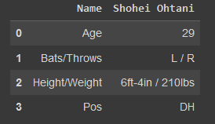Now that all of the data I required to complete my card was collected, it was time to make it visually appealing.
Data Visualization Techniques
The data frames above had all the information I wanted to display in the stat overview on the back side of the card as well as the radar chart for the front side. These needed to be reformatted in a visually appealing way that fit the overall theme of the card. I focused on the back-of-card stats first returning to the ‘player_card_stats’ function.
Using the ‘Plottable’ Python library, below is a portion of the code written to create the final version of the ‘card_df’ to display on the card.
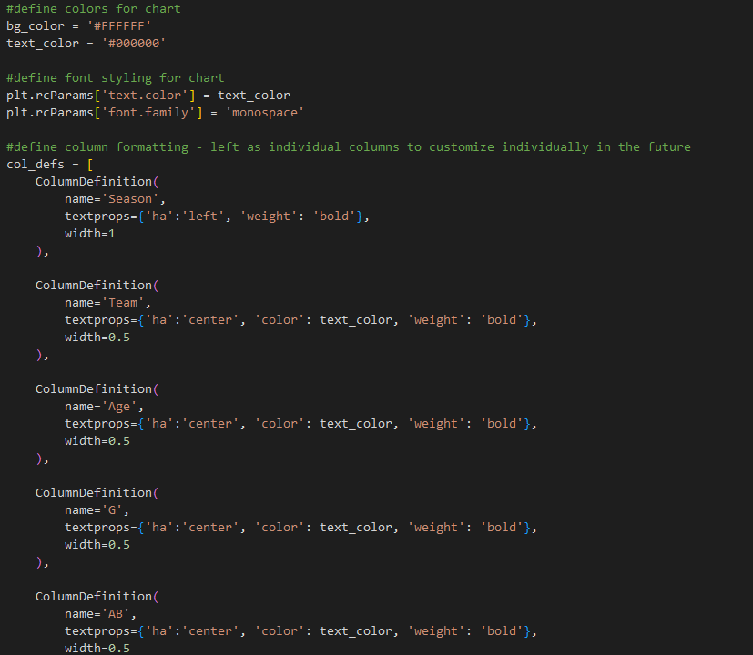The first step was to define a background color and text color for the chart. This is done by creating variables using the hex codes of the colors to be used. I went for simplicity and chose black text on a white background. Next was to define the parameters of each column of data (note: this was done individually as opposed to a ‘for’ loop to allow me to revisit and customize visual aspects of the data more easily in the future). The name of the column is specified, followed by the text properties. As seen above, the horizontal alignment of each column (‘ha’) was specified, followed by the color of the text, followed by the weight of said text. I chose ‘bold’ as I wanted this data to be the prominent feature of the back side of the card. Once each of the columns’ properties was specified, it was time to plot the chart.
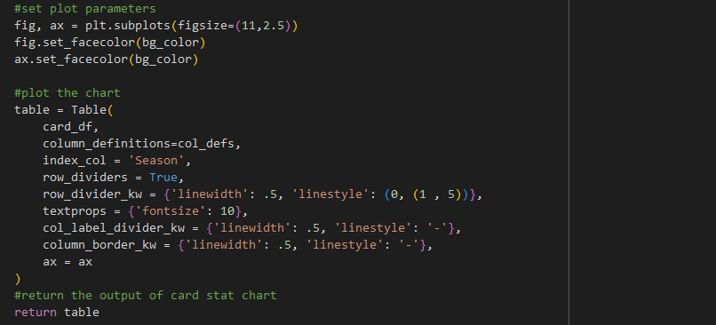Setting the figure size and color was first up. The color was set as the background color specified above. This code was run several times to see the output of the final chart before landing on the figure size defined above. The next pieces of code define the data to be presented and additional visual aspects of the chart. The ‘card_df’ data frame was the data input, the column definitions from above dictate the column text output, the ‘Season’ column was the value used to index all of the data, lines between rows to break up the individual rows of data were set, and text seizes were determined. The returned output is below.
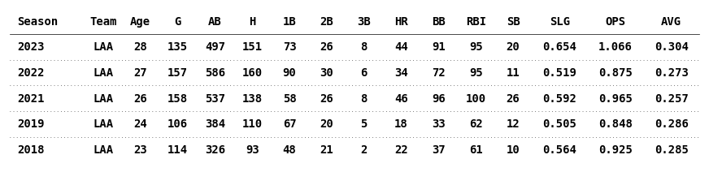This output is a clean look at overview statistics that is easy to digest. The bold black text on the clean white background draws the eye to the information. Happy with the output of this information, I focused my attention on the radar chart.
Returning to the ‘current_player_radar’ function, I took the weighted and ranked player data and began formatting the radar chart. I defined the array of columns set to the scored items generated above to be used in the chart. From there, I aligned the data in each row of the columns to the chart labels.
Formatting the chart I set my data and labels, defined my line type, my markers, and physical attributes of the plot such as fill color and size. I chose the ‘spline’-type line as I feel it is more visually appealing on the card than an angular polygonal shape, and shows how each stat ‘flows’ together to create one cohesive set of stats and abilities.
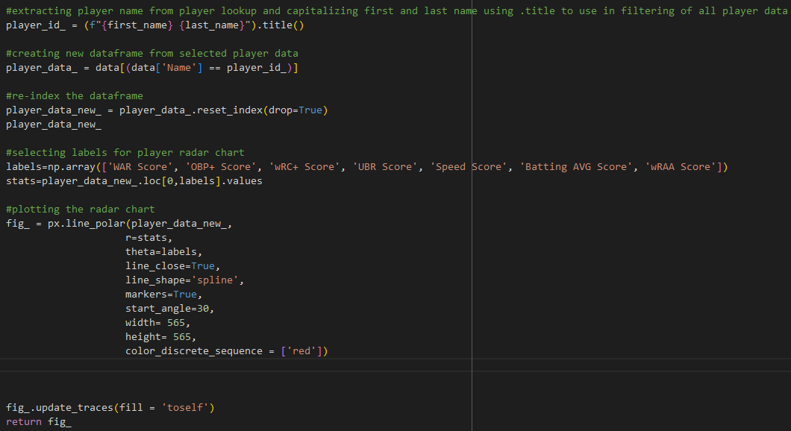Output for my radar chart is below. As shown, the grey outer circle is the maximum levels of the league, and the highest a player can achieve. That would be a perfect score. The red filled area is the player’s stat levels in relation to the rest of the league. As seen below, Shohei Ohtani’s scores are far above average with the fill area of his chart mostly full in all selected attributes.
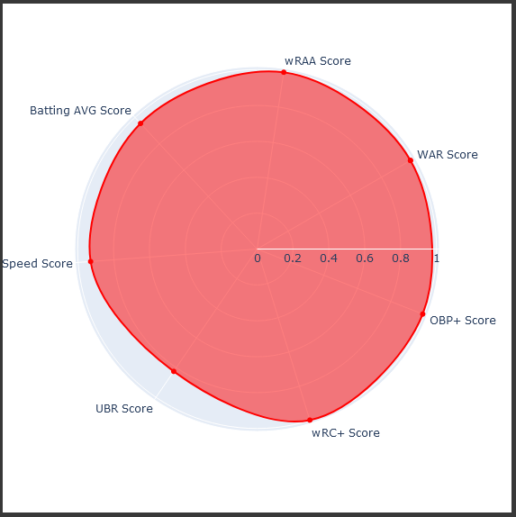Design of Baseball Card
It was then time to start putting all of this information into a baseball card format. I used the open-source visual editor, Gimp, to to create my card. I began by defining a canvas in the size of a standard playing card, 2.5in x 3.5in, and set the dpi of the file to 300. I duplicated this file so that I had one file for the front of my card and one file for the back.
Starting with the front of the card, I created an off-white border and set a background. I placed a player image over this and created areas for player name, position, and team data. Once that information was inserted, it was time to add the radar chart. I placed the chart in the bottom left-hand corer of the card in an area unobstructed by other pieces of information on the card. After playing with formatting, adding labels, creating and inserting a simple logo, and merging all of the layers together to prep it for printing, the front of my card was complete. You can see the final front of the card below.
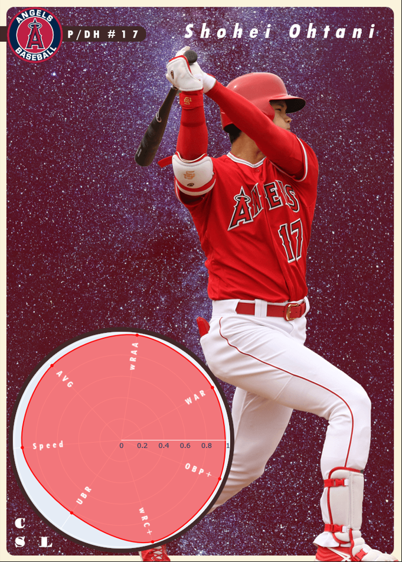It was then time for the back of the card. First I created a text layout for title and player attribute information that was scraped from Fangraphs. Once this info was formatted, I inserted a team logo and a created a serialization for the card. The logo created for the front was again inserted on the card. Once this info was complete, I inserted my ‘card_df’ overview stats. The results for the back of the card are below.
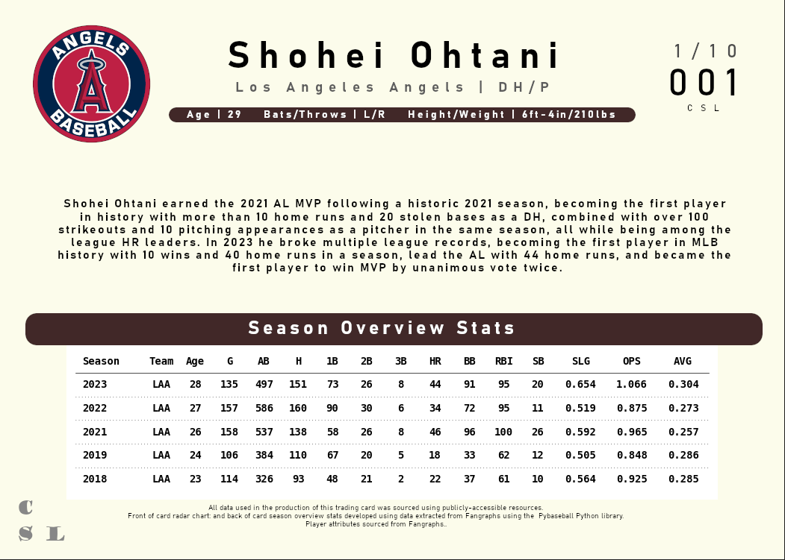Overall, I am very happy with the results of this card. The colors, graphics, fonts, and data visualizations all lend themselves to a clean, easy to read baseball card. The radar chart on the front provides a quick player ability level if a person wants to make a quick selection based on a visual representation of offensive abilities and how good that player is, while the overview stats on the back provide a breakdown that align to those overall offensive abilities. Additional players cards will be developed using this method, and I hope to have a larger set of cards soon. I would like to use machine learning algorithms I am currently developing to create player cards that use predictive stats for the following season. There are limitless possibilities to the stats and graphics that can be represented on these cards, and I am looking forward to creating additional projects using baseball data in the future.